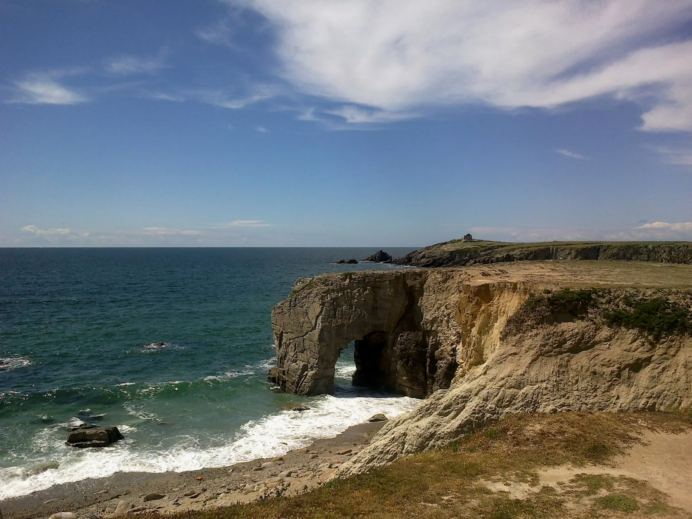

Port Blanc — Quiberon
Morbihan, France · surf

Petite vague abritée idéale pour apprendre dans une eau souvent calme. Cadre breton magnifique, parfait pour les familles et les premières sessions.
- Lieu
- Morbihan, France
- Niveau
- Débutant
- Activités
- surf
- Type d'eau
- Mer / océan
- Coordonnées
- 47.49, -3.12 (position approximative du secteur)
Dangers à connaître
- Quelques rochers sur les bords du spot.
- Eau fraîche selon la saison.
Le conseil d'Ocean Buddy
Super spot d'initiation ! Reste au milieu de la plage, loin des rochers, et profite 🐙
Ouvrir dans Ocean Buddy Télécharger sur l'App Store
Source : Description historique Ocean Buddy · vérification externe en attente.